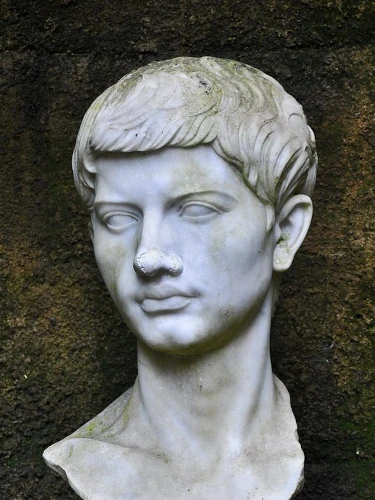

Publius Vergilius Maro
70 př. n. l. – 19 n. l.

- nejvýznamnější římský básník tzv. zlatého období římské literatury
- pravděpodobně pochází z prosté rodiny
- studoval nejprve v Cremoně a v Mediolanu (dnešní Milán), později v Římě rétoriku, filosofii a matematiku
- od mládí podle všeho trpěl jakousi respirační chorobou
- autor eposu Aeneis na přání císaře Augusta
- vydal se na cesty po Řecku (poznání mytologie)
- před smrtí prý žádal, aby jeho sbírka Aeneis byla spálena, neboť je nedokončená
- Aeneis dosáhla po vydání obrovského ohlasu a byla všeobecně považována za vrcholné dílo
- Eclogues, Georgica, Aeneis
Aeneis
- 12 zpěvů
- velmi ovlivněna homérskými eposy
- mýtus o trójském hrdinovi Aeneovi, jenž se vydává po pádu Tróje na putování s cílem najít novou vlast
- bloudí, zažívá dobrodružství (jako Odysseus)